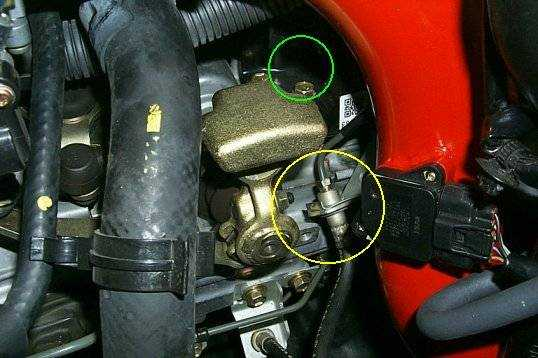

These are my thoughts on the PHR Cold Air Intake,
- Install Instructions: Ok, but text only. There are steps in the instructions that mention figures that don't exist.
I am a stickler for stiff like this. Don't tell me to reference a picture that doesn't exist. Keep in mind that my
instructions are old so this may have already been fixed. In general I think the instructions need to be improved.
They tell you to disconnect things and leave them disconnected but don't suggest where to store them. Example,
the electrical plug that goes to the butterfly valve air valve under the stock airbox. Or, when you remove the stock
intake tube, there is a plastic harness that holds two hoses which attaches to the stock tube, behind the throttle
body. The PHR tube has no such attachment point so now these hoses are kind of loose. No big deal but with a
little tweaking the instructions could be much better.
- The ECU duct: I ended up not modifying this for three reasons. First, the pictures mentioned above were missing.
Second, I want everything to be as stock as possible since this is a lease. Third, it seemed to go back in ok without
modifying anything. Update: The ECU duct *will* pop out if you don't bend it, although
only occasioanlly.
- Fit: This intake seems to fit too tight, and not very well. The end closest to the throttle body seems to come out
at a somewhat odd angle, but this isn't that big of a deal. What REALLY bothers me is shown below:

This is a picture from PHR's site, modified by me. The hydralic fitting under the yellow circle has been relocated. It
is supposed to be up around where I put the green circle. The instructions make no mention of this change. With
the fitting in the stock location, the intake sits right on the hydralic hard line. I don't know about you, but I'm not in
the habit of bending hard hydralic lines so I had no desire to change this on my car. If the instructions had at least
said something I would have been more confident.
- Sound: this thing sounds pretty MEAN. It's a different sound, I've never heard anything like it but it sure is
loud! The hiss when your at idle is pretty cool too.
- Power: don't know yet. I only drove around for about 15 minutes and I've heard it takes the ECU a while to learn
how to use the intake. We'll see. Update: I can attest that this intake does make boucoup top-end power.
Now that I have the stock intake back on the difference is quite noticable when the second cam kicks in.
Ok, I hope this helps someone.
Thanks,
Josh
|